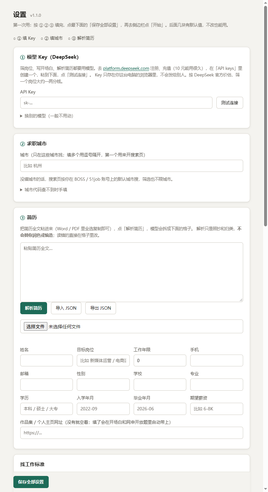
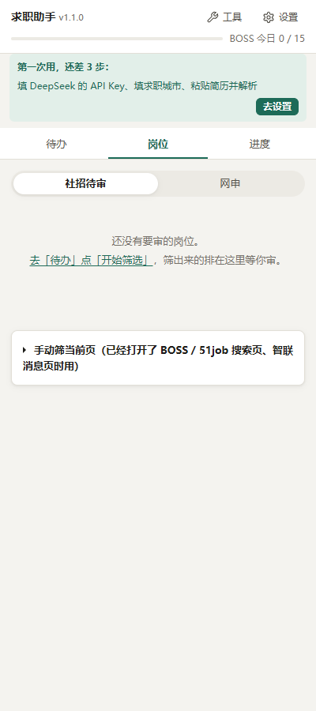
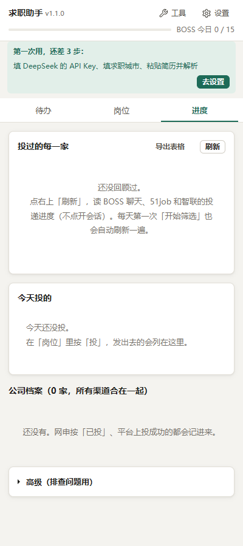
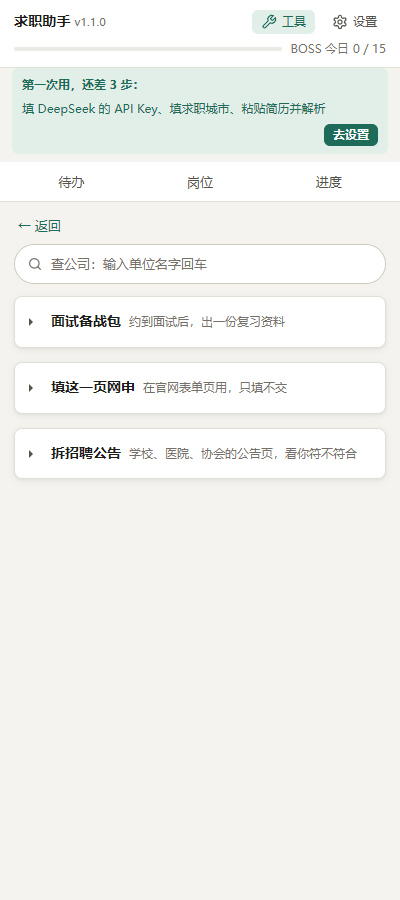

求职助手 · 使用教程
一个 Chrome 插件：在 BOSS直聘、51job、智联上按你的简历和求职标准一家家看岗位，判断投不投、写好开场白，排成清单等你审。你按了「投」它才会发。
1. 安装（2 分钟）
- 把收到的压缩包解压到一个固定的位置，比如
D:\求职助手。装好以后这个文件夹别删、别挪，插件就是从这里读的。 - Chrome 地址栏输入
chrome://extensions回车，打开右上角的「开发者模式」。 - 点「加载已解压的扩展程序」，选解压出来的
extension文件夹。 - 点工具栏上的拼图图标，把「求职助手」钉到工具栏。以后点它，右边就会弹出侧边栏。
2. 第一次设置（10 分钟）
装好后设置页会自己弹出来。侧边栏顶上也会提示「还差 3 步」，点「去设置」一样能进。
- ① 填 Key：插件用 DeepSeek 判断岗位、写开场白。去
platform.deepseek.com注册、充 10 块钱（能用很久），在「API keys」里创建一个，粘进来点「测试连接」。Key 只存在你这台电脑的浏览器里。 - ② 填城市：你要找工作的城市，比如「杭州」。
- ③ 解析简历：把简历全文复制进框里，点「解析简历」。它只照抄和归类，不会替你润色或编东西；格子里有读错的，直接改。
- 找工作标准：把带【】的地方改成你自己的情况，比如想要什么样的公司、什么样的不要。写得越具体，它判得越准。
- 点最下面的「保存全部设置」。

3. 每天怎么用
开始前，先在这个 Chrome里登录 BOSS直聘、51job、智联招聘。插件用的就是你自己的登录状态。



「待办」：每天从这里开始
- 点「开始筛选」。插件会自己打开搜索页一家家看，只看不点。点开「筛什么」能改关键词、选平台。跑的时候 Chrome 窗口别最小化，最小化了网页会睡着。
- 「要你处理」只列真要你动手的：HR 回了或者有意向的、没投成的、网申快截止的。点一下就跳过去。
- 「BOSS 新消息」点「看一下」，会读 BOSS 的聊天列表，告诉你谁值得回，还给你一句回复草稿。它不会点开会话，HR 那边看不到「已读」。
「岗位」：审完再投
- 社招待审：筛出来的岗位都在这里。右边的数字是「合适度」，满分 100，只当参考。点一行展开，看为什么推荐、JD 里有没有暗坑，再改改开场白，满意就按「投」，不想要按「不投」。看岗位原页、定制简历、查公司、拉黑这家公司，都在「更多」里。
- 想一次投好几家：勾上前面的小方框，点「投选中的」。
- 网申：校招网申公告，默认只显示「建议投」、没截止的，快截止的排在最前面。点「去投递」到官网自己投，投完回来按「我投了」记一下。
「进度」：投出去的每一家现在怎样了
点「刷新」，插件会去读 BOSS 聊天、51job「我的申请」、智联「求职反馈 / 面试邀请」，把每一家分成：要你接（面试）、HR 回了、可以跟一句、在等、没动静、婉拒。前两组默认展开，其余点开再看。「导出表格」能存成 Excel 打开。
4. 四个工具（侧边栏右上角「工具」）

| 查公司 | 输入单位名字回车，后台搜百度（你登着企查查的话顺带看），AI 告诉你这家公司规模、加不加班、有没有欠薪仲裁，每条都带出处。一次半分钟、一两分钱。 |
|---|---|
| 面试备战包 | 约到面试后，填公司和岗位，一两分钟出一页能打印的复习资料：公司是干什么的、网上的面经、1 分钟和 30 秒自我介绍、可能被问的题和答题思路、反问清单。只用你简历里的真经历，不会编数字。 |
| 填这一页网申 | 打开公司官网的网申表单，点「填这一页」，按你的简历自动填，每个框填完都会回读核对，红框是要你看一眼的。身份证这类敏感信息不发给 AI，你手填一次再点「记住这页我填的」，下次自动填。提交、下一步永远你自己点。 |
| 拆招聘公告 | 学校、医院、协会的招聘公告，岗位表常在附件里（PDF / Excel / Word）。打开公告页点「拆当前页」，它会逐个岗位告诉你符不符合、卡在哪一条（专业、学历、年龄……），还会标出要不要笔试。 |
5. 一定要知道的
点「投」那一下，BOSS 会先自动发出你账号里设置的默认招呼语，插件再接着发它写的开场白。所以先去 BOSS 把默认打招呼语改成你能接受的。
- 有封号风险。默认设置偏保守：BOSS 每天最多 15 家，每家间隔 25～70 秒，出现验证码就停。这几个数别往大调。
- 花钱：用的是你自己的 DeepSeek，筛一个岗位大约一两分钱（按官方价估）。
- AI 的判断只是参考。公司靠不靠谱，投之前自己再看一眼。
- 数据只在你电脑上：简历、Key、投递记录都存在这个 Chrome 里，插件没有自己的服务器。往外发的只有两样：给 DeepSeek 做判断的岗位和简历内容，去百度搜的公司名。
6. 常见问题
| 点了开始没反应 | 先看顶上有没有「还差 3 步」的提示，Key、城市、简历都要填。再看筛选关键词是不是空的。 |
|---|---|
| 跑到一半停了 | 多半是网站弹了验证码，去那个标签页自己过一下，再点「开始筛选」。筛过的岗位不会重复看。 |
| 进度里 51job / 智联是空的 | 这两个网站要在这个 Chrome 里登录着才读得到。 |
| 拆公告说附件要验证码 | 有些学校网站下载附件要输图形验证码。你点开附件输一下，下载到电脑上，在「拆招聘公告」里选这个文件，再点「拆当前页」。 |
| 插件更新了怎么换 | 把新的 extension 文件夹覆盖旧的，再去 chrome://extensions 点插件卡片上的刷新按钮。设置和记录都还在。 |